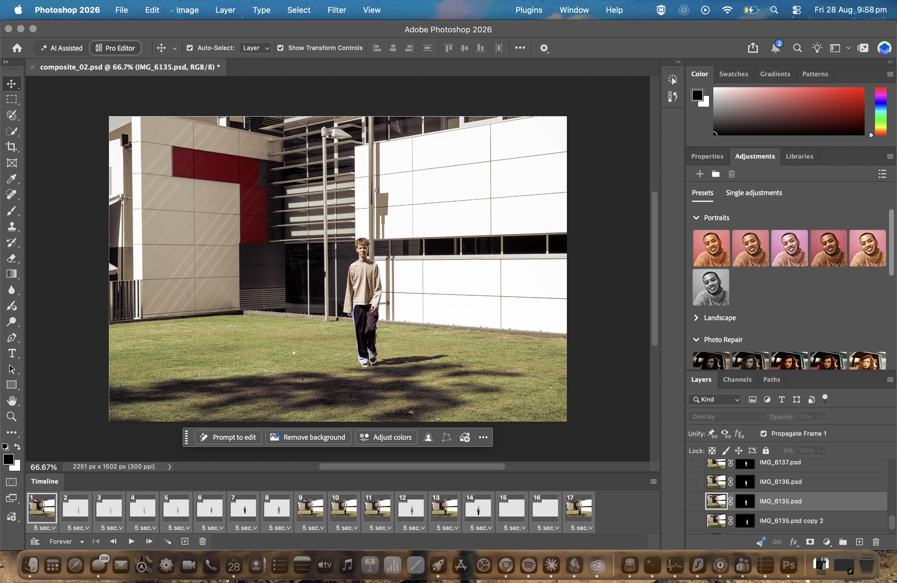
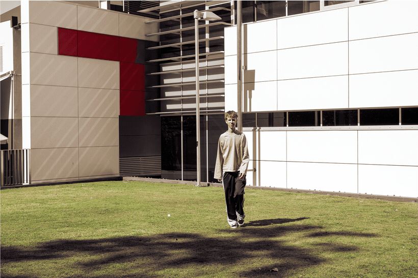
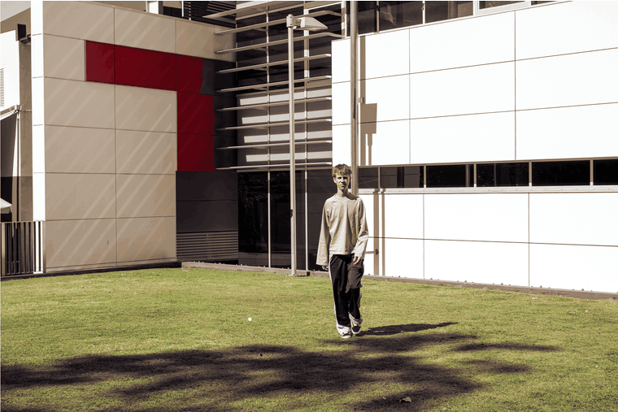
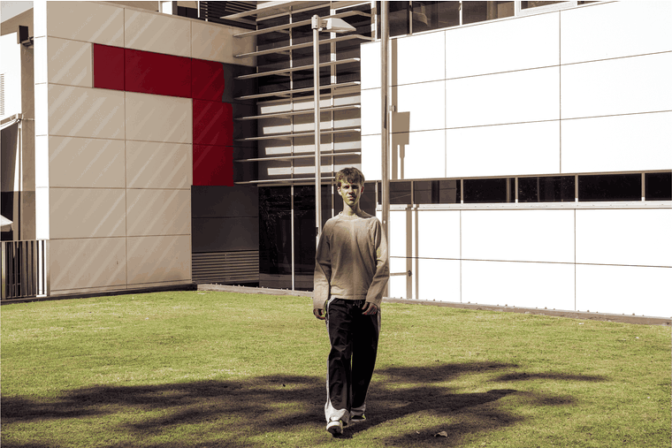
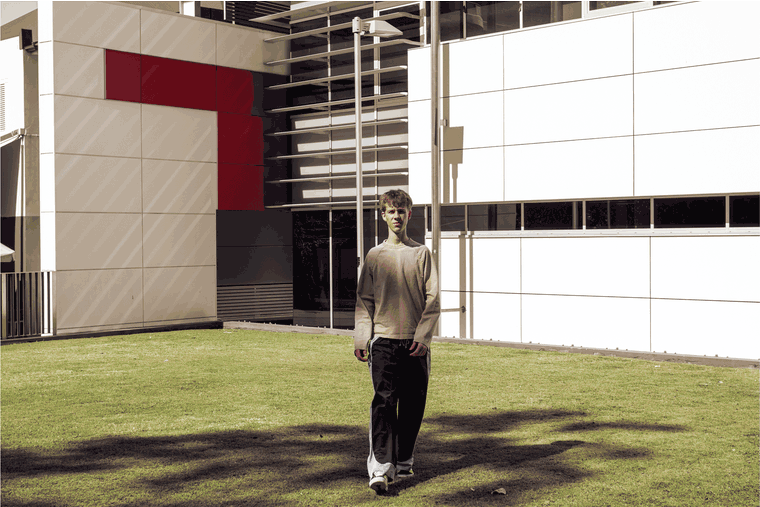
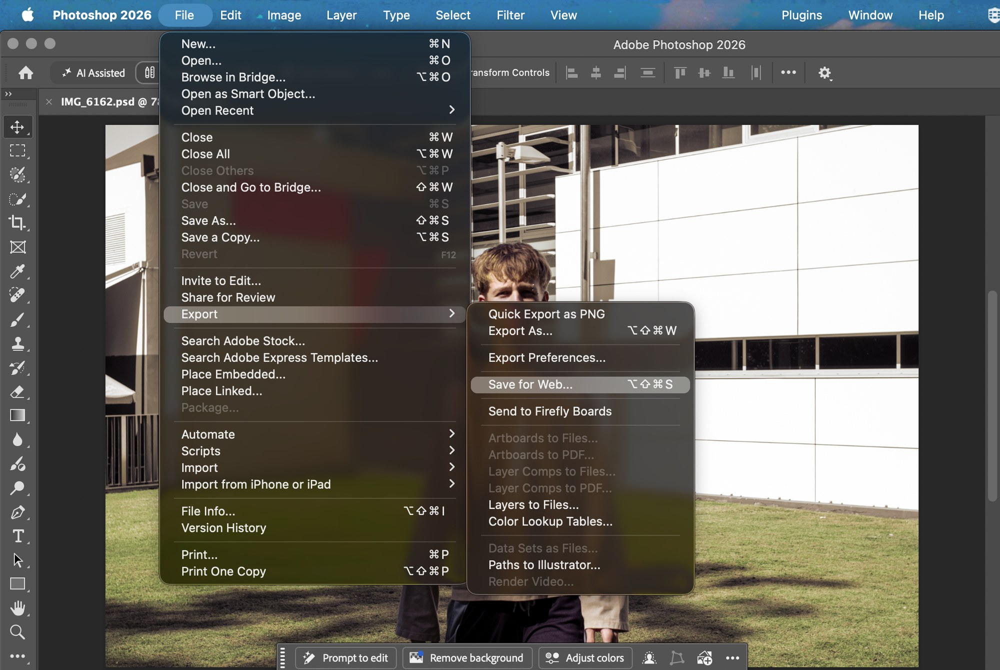

From stack to frames
Task 03 stacked all of the exposures on top of each other into one still image, and this does the exact opposite by playing those same layers back one at a time. It is the same material read two different ways, one spatial and one temporal.

Photoshop opens the Timeline in Video mode by default, which is the wrong one for this, because video timelines produce continuous footage rather than the separate frames a GIF needs. Switching it to Frame Animation and then running Make Frames From Layers turned every layer of the composite into its own animation frame in one step, masks included. Playing them back in order rebuilds the walk that the composite had frozen.
Changing the frame duration
All five of these come from the same seventeen frames, and the only thing changing between them is how long each frame is held on screen. That one variable on its own changes what the animation ends up being about.

Fast enough that your eye starts joining the positions together, so it reads as movement rather than as separate photographs, but there are not enough frames to make it genuinely smooth so it still stutters. It ends up sitting somewhere between an animation and a slideshow.
17 frames · 0.1 s · loop forever

Five times slower than the last one. Each position is held long enough that you look at it on its own, so it reads as a set of photographs rather than as motion. The frames are identical, but changing the tempo changes what the thing is about. At 0.1 it is a walk, and at 0.5 it is a study of postures.
17 frames · 0.5 s · loop forever
Holding the opening frame before the rest of the sequence runs creates a pause, so when the movement finally arrives it feels like an event rather than a loop starting over. That is rhythm rather than tempo, meaning it is not about how fast the frames go but about where the emphasis falls inside them.

The same frames played backwards. He was walking towards the camera, so reversing it turns the whole thing into a retreat, and the shadows now move against the direction the sun says they should be going. Nothing was reshot or re-edited here and only the order changed, which is the clearest sign that sequence carries meaning on its own.

Tween builds frames in between two existing ones by interpolating their position and opacity. The other versions cut hard from one position straight to the next, whereas this one dissolves, so he fades through the space rather than stepping through it. It is the smoothest of the five and also the least true to what I actually photographed, because those in between frames never existed in front of the camera.
Export

Save for Web is the one that writes an animated GIF, as opposed to Export As or Quick Export which flatten it to a single still. GIF only carries 256 colours, so I checked the exports back against the composite for banding in the lawn and the sky where the gradients are smoothest. The full size files came out between 10 and 22 MB, which is unusable in a browser, so I brought both the pixel dimensions and the palette down to get them to 1 to 2 MB with no visible difference at the size they display here.
Save for Web · GIF · 256 colours · loop forever · 1 to 2 MB each